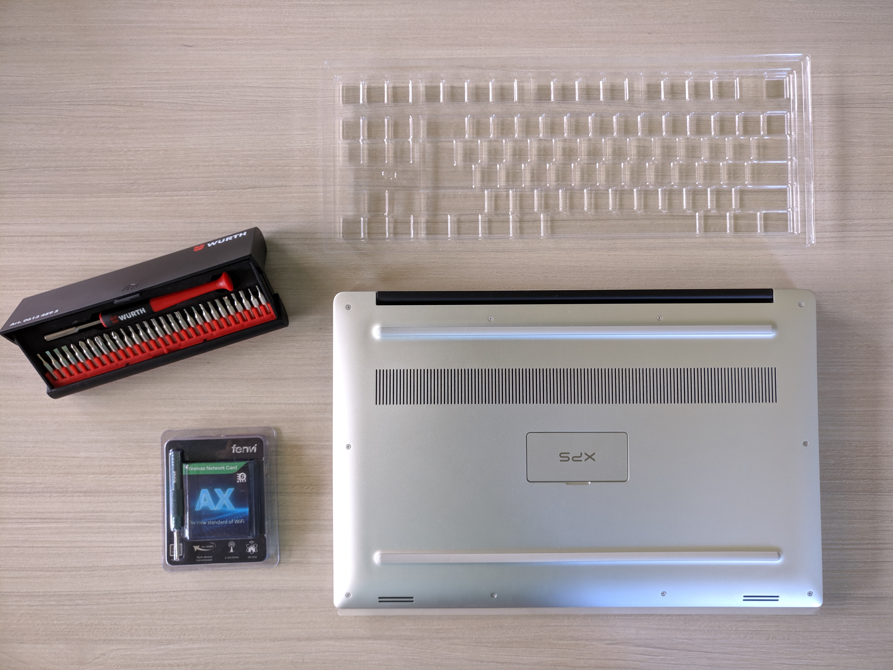
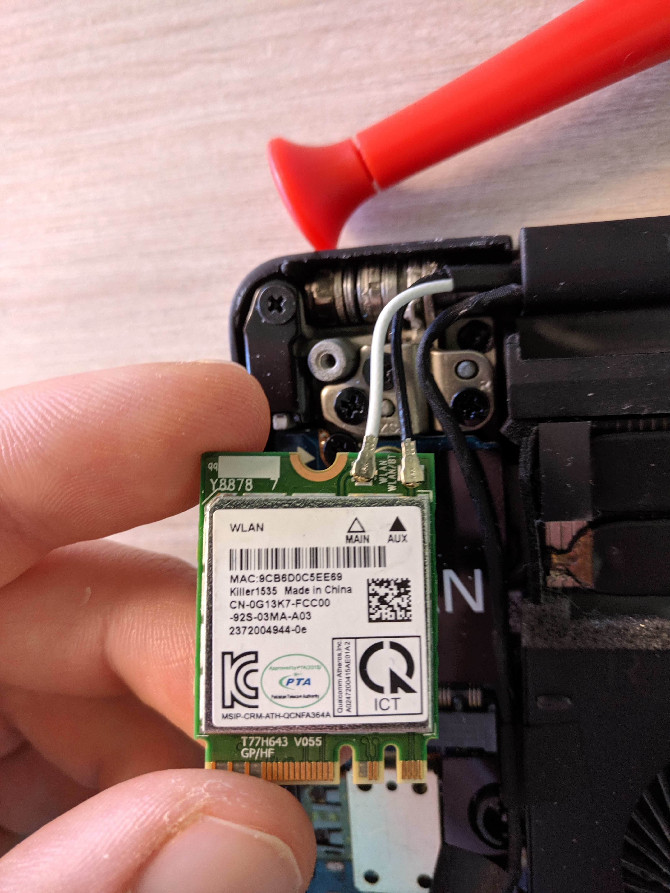
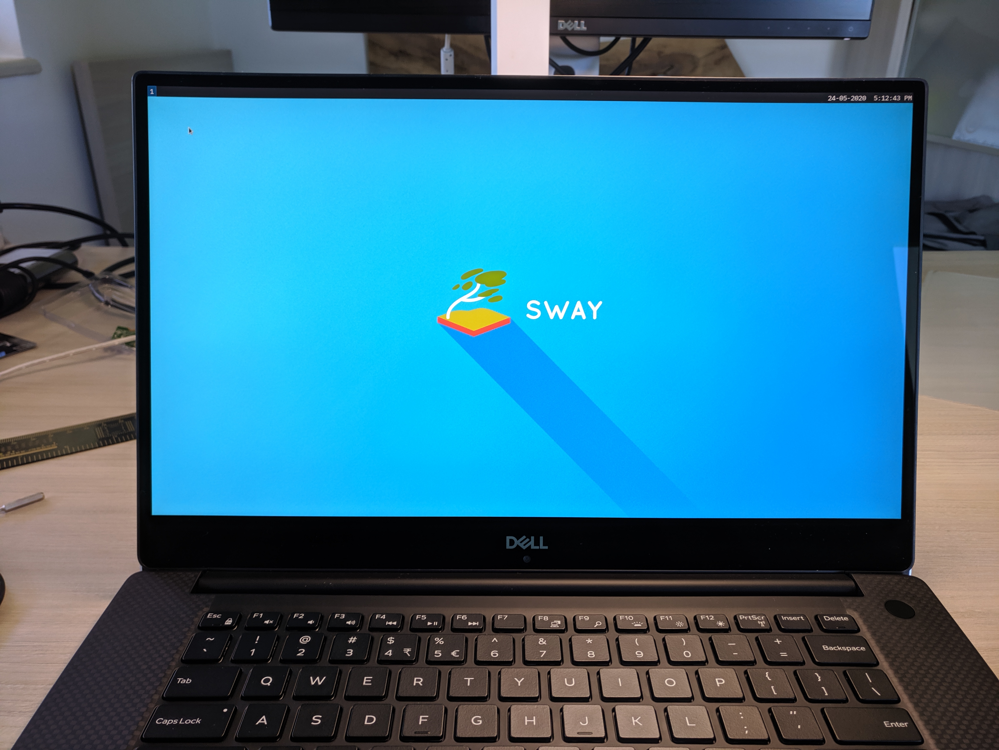
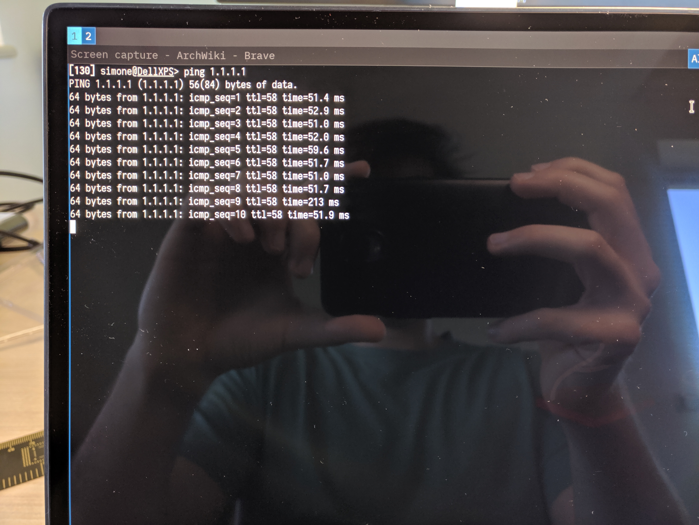
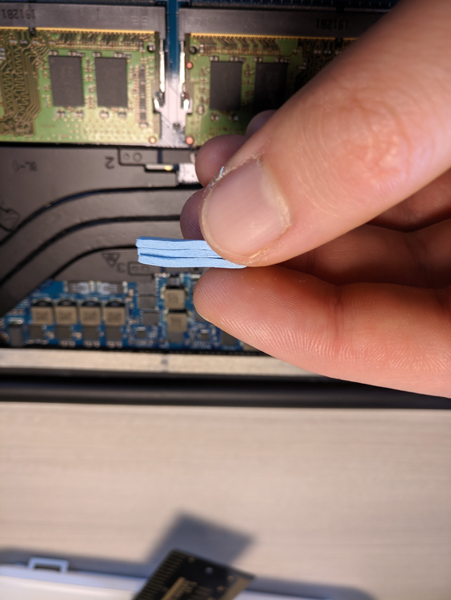

Dell xps 9570 intel wifi card upgrade
In this post I will show how I upgraded the wifi card of my Dell XPS 9570 from a Killer AC-1535 to an Intel 6 AX-200.
I took the opportunity to apply some thermal pads on MOSFETs of the board as too obtain better heat exchange, performance and fewer fan-spinning.
Note: as today (28-07-2020) the Intel 6 AX-200 wifi card is not officially supported by the XPS 9570 bios
Tools:
- Torx T-5 screwdriver
- Phillips screwdriver #1
- Screw holder/organizer 
Teardown Order
- Remove the two inner Phillips screws
- Remove the 10 torx screw in a star pattern, and keep them in order in the organizer
By keeping them in order we will avoid problems during reassembly, like non easily screwable screws and non flush with the body screws.
Memorize Antennas position
| Old Card | Old Card Antennas Position |
|---|---|
 |
 |
It happens very often that the colors for the main and auxiliary antennas (on the sticker) are switched on the new wifi-card. What this means is that:
before unplugging the antennas connector write down or remember the color codes of the antennas cables as defined by the stock card or in the user manual.
In my case the main antenna is the white cable and the auxiliary antenna is the black one. No one guarantees that this color code will be used on the new wifi card! so you need to put back the cables in the right place and not by matchig the right color.
The reason behind this is partially supersticious partially real: a lot of users on reddit reported that they switched cables position when installing the new card resulting in performance and range drop issues with the new card.
- White cable = MAIN
- Black cable = AUX
Card Comparison
| Card Comparison | Card Comparison Back |
|---|---|
 |
 |
As you can see the color codes in the new card (left) are switched.
Install the new card
 Personally I plug the antennas connectors before putting the new card in as it makes the operation easier. But remember not to pull the antennas or push the connectors too hard as they may broke.
Personally I plug the antennas connectors before putting the new card in as it makes the operation easier. But remember not to pull the antennas or push the connectors too hard as they may broke.
As you can se the antennas color and the color codes on the card don't match but the function does (white antenna = main, black antenna = aux).
After putting back the holder the installation process for the new wifi card is done.
The linux kernel (at least the 5.X.X) ships with the drivers for all common intel cards, so no additional configuration is needed.
| Arch Linux + Sway | Succesful ping |
|---|---|
|  |  |
N.B. As today (28-07-20) I still did not look into Bluetooth 5.0 capabilites of the AX-200 since I do not use it as much. In fact with my configuration at every boot I get bluetooth kernel errors like:
$dmesg --level=err
....
Bluetooth: hci0: command 0xfc09 tx timeout
Bluetooth: hci0: Failed to send firmware data (-110)
Bluetooth: hci0: sending frame failed (-19)
....
MOSFET Thermal Pad application
My thermal pad of choice was Arctic 6.0 W/mK, I choose this ones as suggested by ultrabookreview, I'm no expert in this stuff.
 What we want to do is to use the XPS alluminum backplate as a heatspreader, so the thermal pads need to touch the back cover.
What we want to do is to use the XPS alluminum backplate as a heatspreader, so the thermal pads need to touch the back cover.
The mosfets are the square ICs with short legs near the inductors (the chunky bois).

To reach the backplate we can stack three layers of thermal pads. When cutting them to size try to stay in the boundaries as not to touch the sorrounding components when they will be in place.
| Thermal pad stack | Thermal pad appication |
|---|---|
|  |  |
Final result

N.B. With time thermal pads dry out so after a year I will check again on their status and if needed they will be replaced.
Date: 28 July 2020 Simone Ruffini